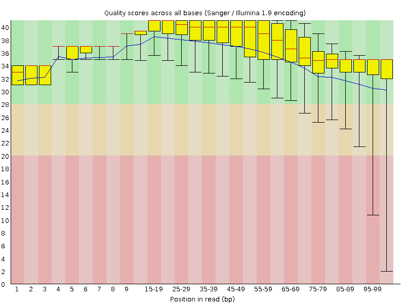
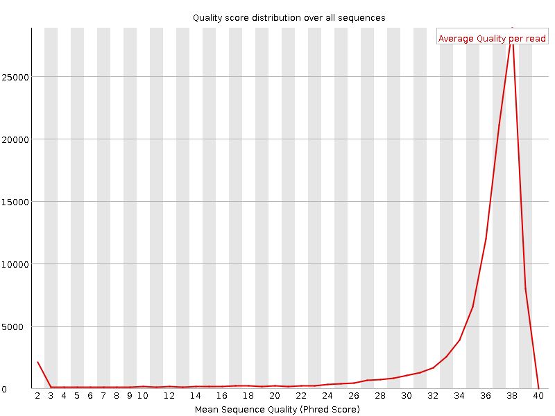
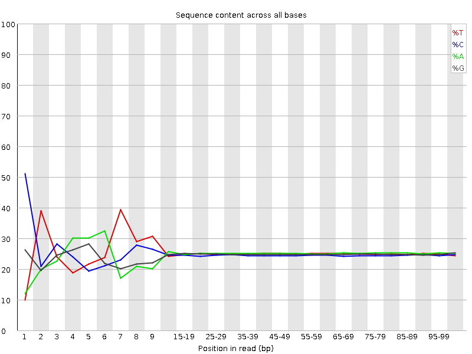
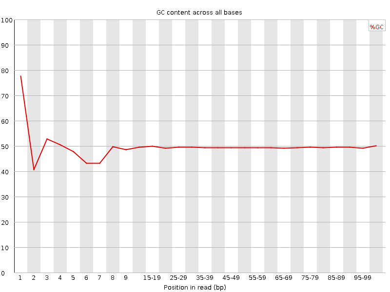
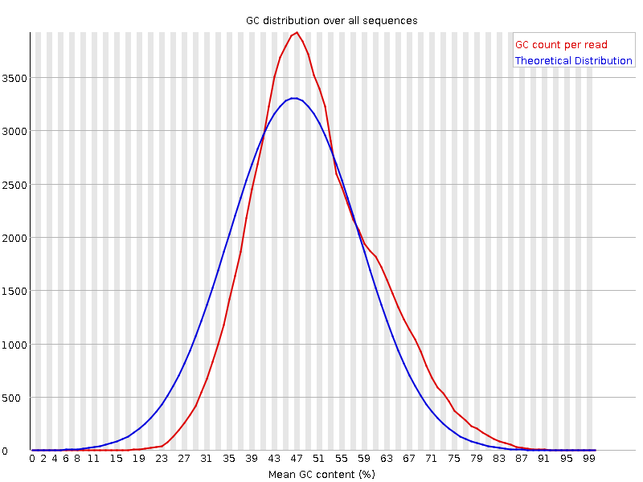
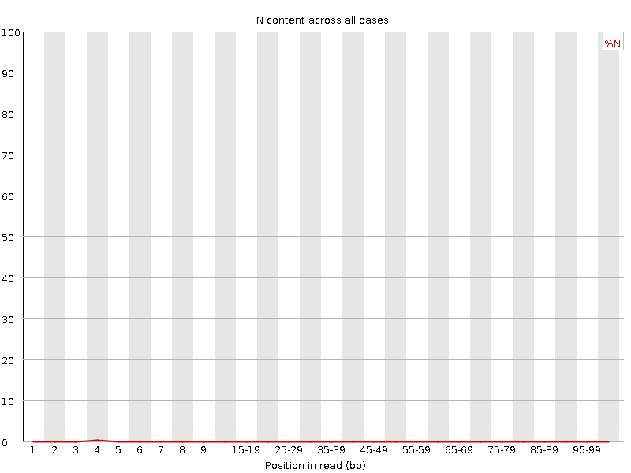
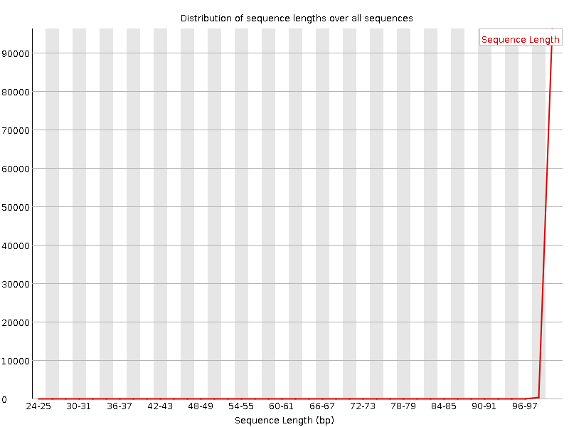
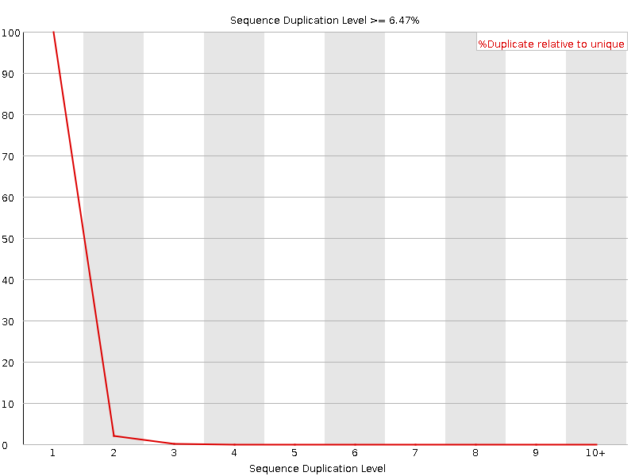
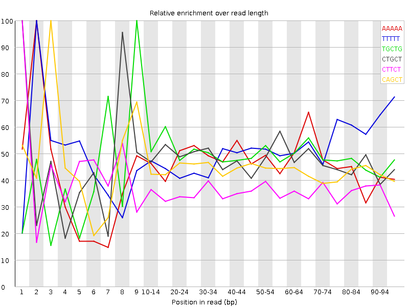

![[OK]](Icons/tick.png) Basic Statistics
Basic Statistics
| Measure | Value |
|---|---|
| Filename | female_repl1_R1.qc.fq.gz |
| File type | Conventional base calls |
| Encoding | Sanger / Illumina 1.9 |
| Total Sequences | 96615 |
| Filtered Sequences | 0 |
| Sequence length | 25-100 |
| %GC | 49 |
Per base sequence quality

Per sequence quality scores

![[FAIL]](Icons/error.png) Per base sequence content
Per base sequence content

Per base GC content

![[WARN]](Icons/warning.png) Per sequence GC content
Per sequence GC content

Per base N content

Sequence Length Distribution

Sequence Duplication Levels

Overrepresented sequences
| Sequence | Count | Percentage | Possible Source |
|---|---|---|---|
| GATCGGAAGAGCACACGTCTGAACTCCAGTCACCAGATCATCTCGTATGC | 209 | 0.21632251720747295 | TruSeq Adapter, Index 7 (100% over 50bp) |
Kmer Content

| Sequence | Count | Obs/Exp Overall | Obs/Exp Max | Max Obs/Exp Position |
|---|---|---|---|---|
| AAAAA | 29975 | 3.229151 | 6.9134264 | 2 |
| TTTTT | 29170 | 3.124399 | 6.098522 | 2 |
| TGCTG | 25435 | 2.8241744 | 5.8074737 | 9 |
| CTGCT | 23940 | 2.6534665 | 5.560319 | 1 |
| CTTCT | 22995 | 2.516843 | 6.9162545 | 1 |
| CAGCT | 22005 | 2.4418027 | 5.514917 | 3 |
| AAGAA | 21375 | 2.3291748 | 5.6259036 | 2 |
| CTCCT | 20670 | 2.2869651 | 8.539177 | 1 |
| CTTCA | 20225 | 2.2162108 | 7.452785 | 1 |
| CTCCA | 18870 | 2.090214 | 6.999502 | 1 |
| TCCAG | 18195 | 2.0190232 | 5.059979 | 7 |
| CTGGA | 17770 | 1.9753634 | 7.8286953 | 1 |
| CTGAA | 17800 | 1.9561976 | 6.9975114 | 1 |
| CTCTG | 17080 | 1.8931162 | 5.560319 | 1 |
| CTTCC | 17035 | 1.8847824 | 5.550465 | 1 |
| CTTTT | 16870 | 1.8265917 | 6.8940954 | 1 |
| CTTTG | 16450 | 1.8036777 | 6.293858 | 1 |
| CTGGG | 14840 | 1.6686311 | 6.508556 | 1 |
| CATCT | 14955 | 1.6387361 | 5.258036 | 9 |
| CTCAG | 14650 | 1.6256493 | 8.457136 | 1 |
| CTGAG | 13900 | 1.5451633 | 5.2012568 | 1 |
| GTTTT | 13955 | 1.5136538 | 5.389034 | 1 |
| CTGGC | 13115 | 1.4720562 | 5.305901 | 1 |
| GGATG | 13150 | 1.4643862 | 6.2330475 | 4 |
| CTTGG | 12145 | 1.3485197 | 5.3559527 | 1 |
| TGGAT | 11550 | 1.2701213 | 5.4122267 | 3 |
| ATGCA | 10980 | 1.206688 | 6.3300886 | 6 |
| CTCAT | 10860 | 1.190015 | 5.497091 | 1 |
| GATGC | 10185 | 1.1321933 | 5.394413 | 5 |
| CTCAA | 10050 | 1.102525 | 5.2917504 | 1 |